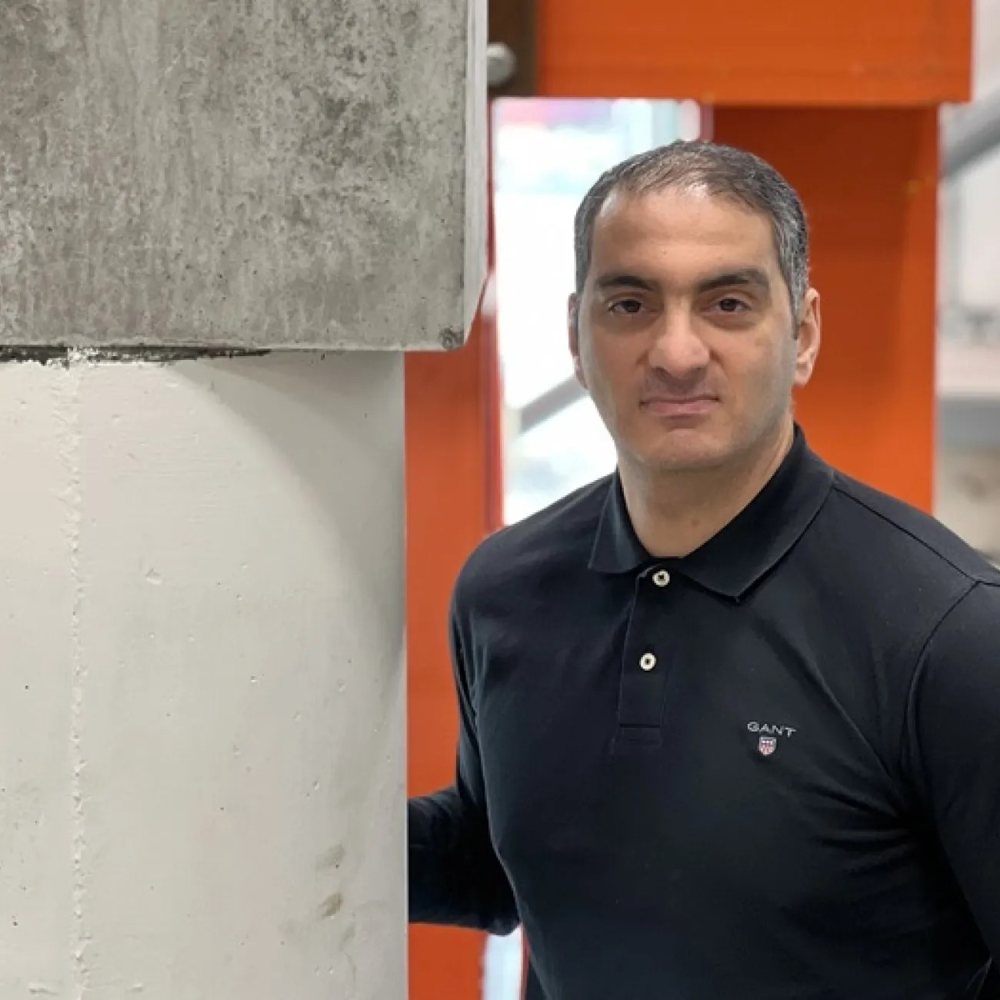

Lab leader
Research Lab Leader · Associate Professor · BSc(Hons) MSc PhD CEng FICE MIStructE FHEA
School of Engineering
Department of Civil, Maritime, and Environmental Engineering (CMEE)
Boldrewood Innovation Campus
University of Southampton
Dr Mohammad Mehdi Kashani is an Associate Professor of Structural Engineering and the Department Director of Research at the University of Southampton. He earned his PhD in Structural/Earthquake Engineering from the University of Bristol in 2014, where he subsequently served as an Assistant Professor before transitioning to his current institution. As a Chartered Member of the Institution of Structural Engineers (CEng MIStructE) and a Fellow of the Institution of Civil Engineers (FICE), his work bridges the gap between advanced computational modelling and practical asset management, focusing heavily on the seismic performance, resilience, and service-life extension of ageing reinforced concrete infrastructure.
Prior to his academic career, he worked as a structural engineer at AECOM, contributing to major UK infrastructure designs including the London Cable Car and the Crossrail Elizabeth Line. Dr Kashani actively drives international structural standards as the Founder and Chair of the fib Working Party 1.1.7 on existing bridges. Furthermore, he leads significant multi-institutional initiatives, most notably serving as the Principal Investigator and consortium coordinator for the €1.05 million EU Horizon Europe MSCA REVIVE project. His high-impact research output has been widely recognized globally, earning him prestigious accolades such as the 2025 ICE John Henry Garrood King Medal and consistent placement on Stanford University's list of the World's Top 2% Scientists.